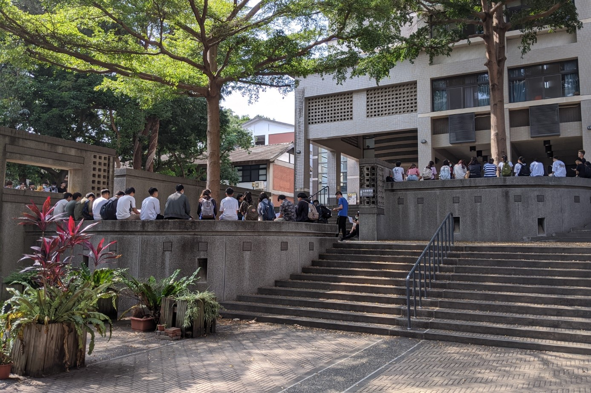

【記者吳冠伶綜合報導】10日，教育部宣布廢止《教育部鼓勵技專校院開設勞作教育及服務學習課程實施要點》，勞作教育議題再度掀起熱議。目前部分大專院校設有勞作教育相關課程，內容多為要求學生清掃校園，並以此作為畢業門檻、必修成績等，引起不少學生反彈。即便教育部已下令廢除此一「鼓勵性質」的行政規則，包含東海大學、朝陽科技大學等校仍依大學自治原則，繼續實施勞作教育。
勞作教育為東海於民國44年創校時率先設立的制度，要求師生共掃校園，或協助餐廳清洗碗盤、圖書館排書、除草等，旨在培養合作、勤勞等美德，並藉此轉變知識份子不事勞動的觀念。隨後，其他大專院校也陸續跟進此制度。而教育部更於99年設立《教育部鼓勵技專校院開設勞作教育及服務學習課程實施要點》，鼓勵各校從事各類動手實作活動，如宿舍、教室與校園環境清潔，促使更多技專校院引進勞作教育。
然而，當校方將打掃校園設為必修課程，相關問題也順勢產生。例如台南應用科技大學的「多元服務學習」課程，每學期一學分，除掃地外，還需繳交期末心得。而樹人醫護的「勤勞教育」不僅是被排入課表的零學分必修課，且學生若未達及格成績，寒暑假仍需到校補掃56小時。南應大美術系學生余宜玹認為，將打掃列為學期成績毫無必要。另一方面，樹人醫護學生會副會長、樹人醫護職能治療科學生陳品妍也指出，學校除美食街有依法雇用清潔工，其他掃區皆由學生負責。他批評，校方打著教育的名義，藉此節省清潔費用支出。
勞作教育能否落實做為一門正式課程的要求，也是其被質疑的因素之一。臺灣學生聯合會前理事長、國立陽明大學牙醫學系學生朱軒立表示：「勞作教育並不是教育，既沒有人授課，也沒有任何方式去考核教育品質。」他認為，校方將勞作教育排進課表，就應檢核學生在其中是否有所學習。
不僅制度問題，學生也批判，勞作教育實施多年來，原初的教育精神逐漸變質。以東海為例，大一學生須在周間上午7時或中午12時參與半小時的勞作。不過，根據東海社會學系學生張皓雅觀察，勞作教育並無讓學生變得愛護環境整潔。東海社會學系學生蕭顗宸也表示，雖認同勞作教育的理念，但學校的做法卻讓勞作教育變相成為要求學生掃地的工具，失去服務人群的精神。但是，由於勞作教育為該校畢業門檻之一，且成績將影響申請獎學金、出國交換等機會，多數學生即便不滿也只能被迫接受。對此，張皓雅直言：「勞作制度講難聽點，就是學校對學生勞動力的壓迫。」

東海大學為勞作教育制度的創始校，至今已實施數十年，然而該校學生對此一傳統多有所批評。 圖／蕭顗宸提供
有鑑於勞作教育延伸爭議不斷，樹人醫護學生會與臺灣學生聯合會合作，於109年大專校院學生會傳承與發展研習營向教育部技職司提出建議，進而促使教育部於10日下令廢止《教育部鼓勵技專校院開設勞作教育及服務學習課程實施要點》。即便如此，教育部仍無直接限制各校勞作教育的實施情形。教育部技職司指出，目前雖已終止獎勵機制，但仍希望各校回歸課程自主，培養該法期待的人才特質，例如隨手服務、勤勞敬業等良好習性。將勞作教育視為校內特色課程的東海大學、朝陽科技大學亦表示，未來會延續既有的課程規劃。
「教育部的態度只是從鼓勵變成不置可否而已，所以又回到大學自治的範疇。」朱軒立無奈地說。然而，他也點出，廢法確實提供改善制度的契機，讓關注該議題的學生趁此機會向學校提案修正校規。陳品妍也表示將以校內行動、跨校聯署的等方式倡議。此外，他呼籲教育部除了廢除不合時宜的法規，也應正視校園內發生勞作教育問題，「即便學術自主，也應有最低的學生權益保障，不要讓這樣的勞力付出成為教育的一環。」
部分大專院校將勞作教育納入必修，學生須透過清掃校園以通過畢業門檻，打掃成績甚至有機會影響申請出國交換、獎學金等機會。 圖／吳冠伶攝

吳冠伶
千禧年生於打狗，貓空寄居中，政大新聞系三年級。喜歡打狗大於貓空，喜歡貓貓狗狗，但貓貓大於狗狗。